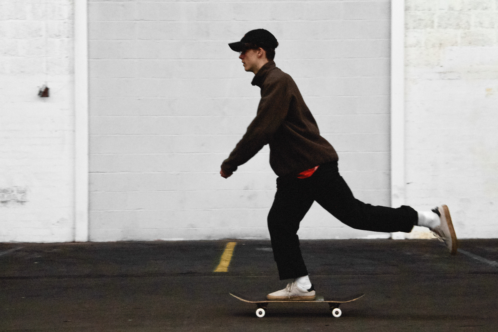

Skateboarding
When I first learned how to ollie I became fascinated with the physics behind skateboarding. The sense of accomplishment after landing something you've tried for hours, or weeks, is unlike anything else. Skateboarding has had a real impact on my discipline and confidence, and it's taught me to get back up when I fall. I'd love to work on a skateboarding game that captures that feeling someday.